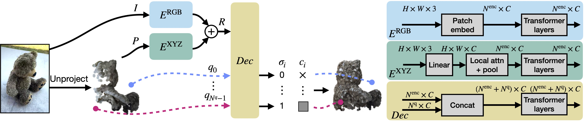

MCC is a new approach for 3D reconstruction from a single RGB-D image.
A central goal of visual recognition is to understand objects and scenes from a single image. 2D recognition has witnessed tremendous progress thanks to large-scale learning and general-purpose representations. But, 3D poses new challenges stemming from occlusions not depicted in the image. Prior works try to overcome these by inferring from multiple views or rely on scarce CAD models and category-specific priors which hinder scaling to novel settings. In this work, we explore single-view 3D reconstruction by learning generalizable representations inspired by advances in self-supervised learning. We introduce a simple framework that operates on 3D points of single objects or whole scenes coupled with category-agnostic large-scale training from diverse RGB-D videos. Our model, Multiview Compressive Coding (MCC), learns to compress the input appearance and geometry to predict the 3D structure by querying a 3D-aware decoder. MCC's generality and efficiency allow it to learn from large-scale and diverse data sources with strong generalization to novel objects imagined by DALLE 2 or captured in-the-wild with an iPhone.
MCC adopts a simple encoder-decoder architecture. The input RGB-D image is fed to the encoder to produce an input encoding. The decoder inputs a query 3D point, along with the input encoding, to predict its occupancy probability and RGB color. This is illustrated in the figure below. MCC requires only points for supervision. This means that we can learn from large RGB-D datasets. The input channel D is read from depth sensors, as in iPhones, or computed by off-the-shelf depth models, e.g. MiDas, or computed by COLMAP in the case of multiview video streams.
@article{wu2022multiview,
author = {Wu, Chao-Yuan and Johnson, Justin and Malik, Jitendra and Feichtenhofer, Christoph and Gkioxari, Georgia},
title = {Multiview Compressive Coding for 3{D} Reconstruction},
journal = {arxiv},
year = {2022},
}